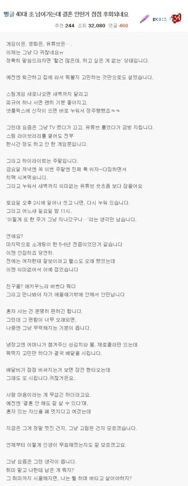

결혼 안한거 점점 후회 한다는 40대 미혼남
댓글
그냥 지가 심심한건데 그거 달래려고 결혼? ㅋㅋㅋ 무료함 달래려고 결혼하나
가보지 않은 길은 원래 매력적으로 보입니더
저건 겪어봐야 아는 감정임 ㅋ
난 이해가 간다. 무료해서 결혼하련게 아님.
외로워서 그런거지.
뭔가 제한없으면 흥미가사라지는듯 난 아직도 게임재밋게하는데
외로움도 잘 타, 주말이라고 퍼질러자다가 1시에 일어나, 운동도 안해, 건강도 당연히 안좋을거고, '어머니가 챙겨준 김치'에, 직접 해먹을 생각도 안해, 이러면서 행복하길바래?
저런 마인드면 결혼을 해서도 문제야 ㅋㅋㅋ 결혼하면 와이프탓, 결혼탓 할꺼 뻔히 보인다.
행복하려면 고통을 동반해야함
맛있는거먹고 늦게자고 맨날누워있어서
재미있는 인생 10년 살면
행복할수가없음
41살 유부남인데
결혼이란거는 증말 사바사야
일단 깔고가는 전제는 자유를 상당수 포기해야한다는거야
한공간에 친구와 사는것도 불편한게마찬가지지만
하물며 이성이면 얼마나 더 충돌이 많겄어
모든것이 불편해
근데
그 불편함을 사랑으로 감쇄가 된대 얼핏들었어
내친구도 딩크인데 와이프랑 퇴근하고 같이 겜방가고 뽑기하러 가고 너무 행복한 부부도 있고
어떤친구는 맨날 싸우는 친구도 있어
40대 되기까지는 잘몰른다
괜히 2030으로 묶겠냐
젊은 축이라는거야
40살전까지는 동아리활동도 해도 잘놀고 그러던데
40살되면 얄짤없어
2차도 눈치껏 빠져주는게 예의고
50대 형님들옆에 있어야해
난 혼자살아도 할거많아
안외로워!!
이거 마흔살전까지 통용되는 이야기야
튿히 친구들 다 결혼후 애낳으면
술먹고 속풀이할 사람도 없어
메타버스로 간다 ㅁㅅㅁ
그건 니가 늙..
자진해서 비혼된게 아니고 도태된건데 뭘 후회니 어쩌니 할게 있나? 글쓴이가 능력자였으면 벌써 여자 데리고 결혼했겠지